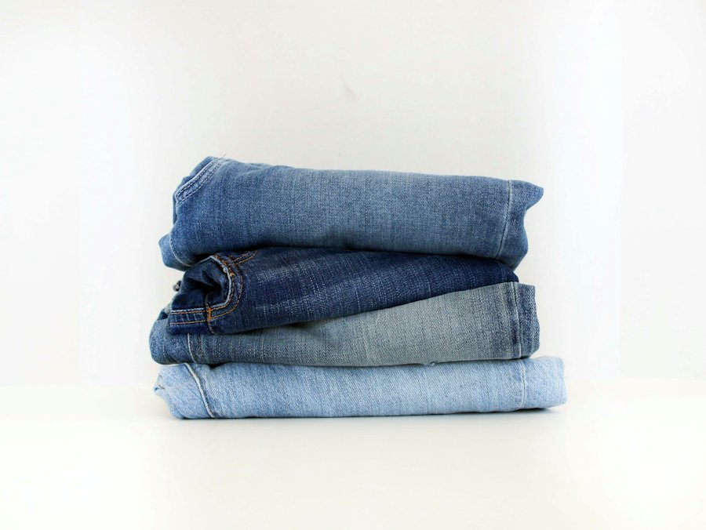

Jeans, velours, vestes et sneakers chinés pour toute la famille. Repérez la façade rouge à l'entrée de la rue de la Marine.
Plus de 1500 jeans en boutique, de la taille enfant au 54. On prend le temps de trouver la coupe et la taille qui vous vont.

Les nouvelles pièces sont publiées au fil de l'eau. Un coup d'œil avant de passer, et vous savez ce qui vous attend sur les portants. Guil' Vintage a aussi deux boutiques sœurs : Cap' Vintage et Fouen' Vintage.
Horaires de la boutique
| Lundi | Fermé |
| Mardi | 10h30 - 12h30, 14h30 - 18h30 |
| Mercredi | 10h30 - 12h30, 14h30 - 18h30 |
| Jeudi | 10h30 - 12h30, 14h30 - 18h30 |
| Vendredi | 10h30 - 12h30, 14h30 - 18h30 |
| Samedi | 10h30 - 12h30, 14h30 - 18h30 |
| Dimanche | Fermé |
Horaires élargis en saison. En cas de doute, un appel suffit.